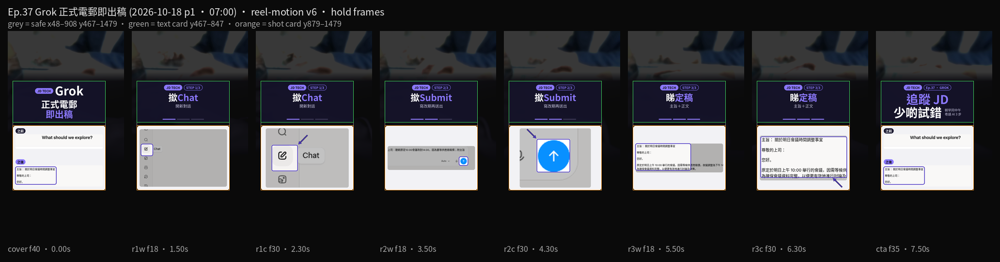

聽朝要覆上司正式電郵。第37集用 Grok（xAI，grok.com 對話）：撳 Chat 開新對話，寫改期再撳 Submit，睇定稿（主旨＋正文）。示範係聽朝原定 10:00 會議改到 14:00，因為要等供應商報價。電郵虛構，無真實公司、姓名、電郵。
Reel 一句講晒：Grok｜正式電郵／即出稿
你會學到
- 點樣撳左側鉛筆掣 Chat，開一條新對話
- 點樣寫會議改期，再撳藍色向上箭頭 Submit
- 點樣睇定稿嘅主旨同正文，貼去真正電郵之前自己對一次
開始前準備
- 瀏覽器開 grok.com。登入同用量以你當日畫面為準
- 講清楚收件人、原定時間、新時間、原因。下面有示範句，可以照抄
- 同事電話、客戶名、真實電郵地址先刪走。撳 Submit 之後，段字會交俾 Grok 處理

可抄提示
示範句（虛構會議改期，無真實公司／姓名／電郵）
請用繁體中文寫一封正式電郵給上司：聽朝原定10:00會議改到14:00，因為要等供應商報價；附主旨一行同正文，語氣得體。
3 步做法
-
撳 Chat：開 grok.com，撳左側鉛筆掣 Chat，開一條新對話。本集第一步跟 tooltip 名 Chat，唔好留喺舊對話度改。
-
撳 Submit：喺輸入框寫改期，再撳藍色向上箭頭 Submit 送出。可以貼上面嗰句。示範電郵虛構：聽朝 10:00 改到 14:00，等供應商報價。有同事電話、客戶名或者真實電郵，送出之前先刪走。
-
睇定稿：睇主旨同一段正文。時間、原因、語氣自己讀一次，先至貼去真正電郵。AI 可能寫錯時間或者語氣過重。示範稿唔好當已經寄出嘅信。
常見錯誤／注意事項
- 唔對稿就貼去上司：主旨、時間、原因逐項讀一次。AI 可能睇漏或者寫錯。
- 當示範電郵係真實：會議改期係虛構。無真實公司、姓名、電郵，唔好對號入座。
- 貼真實個人資料：同事電話、客戶名、真實電郵地址先刪走。
- 搵唔到 Submit：2026-10-17 畫面送出係藍色向上箭頭，掣名係 Submit。
- 留喺舊對話：第一步撳 Chat 開新對話，先寫今次改期。
示範電郵虛構。定稿只係方便起稿，寄出前以你自己核對過嘅字為準。請自行核對語氣。
香港用戶留意
用瀏覽器開 grok.com 就得。要認嘅字：Chat、Submit。定稿有主旨一行同正文，貼去真正電郵之前自己讀一次。呢頁教你出稿，唔係叫你轉發呢則片。
官方說明
- Grok（grok.com）
2026-10-17 自錄：左側鉛筆掣叫 Chat，送出係藍色向上箭頭 Submit。登入、用量同介面以你當日畫面為準。營運係 xAI
（grok.com 當日打開。介面可能更新，以官方為準）
原帖
睇原 Reel ↗（2026-10-18 發佈）